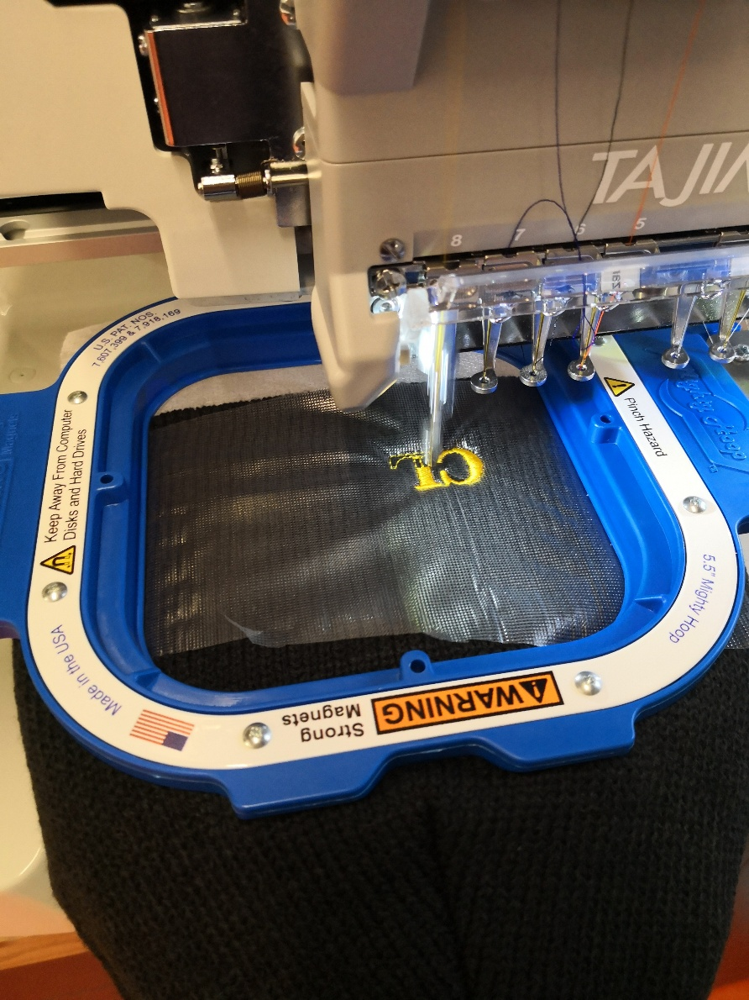
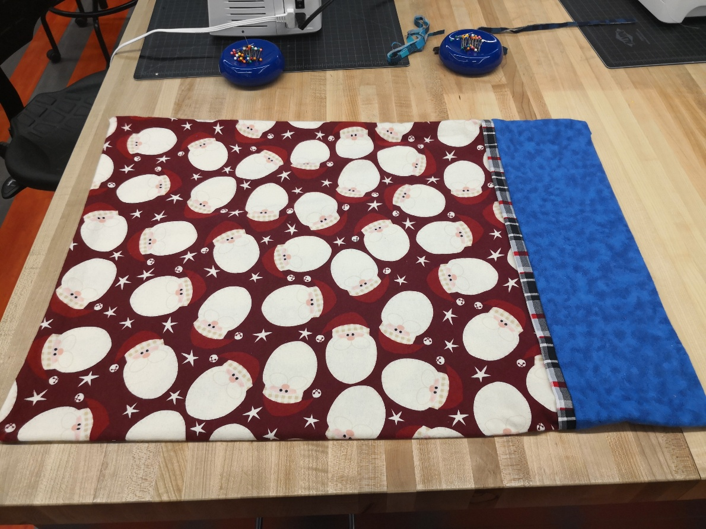
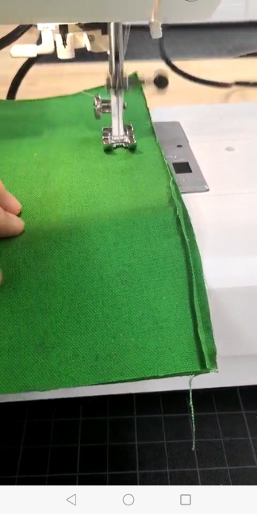

In class today, we learn how to use embroidery machine to embroider hats and other stuffs. I choose to embroider a hat for track because for most of the time track season is cold. Therefore, the first step I need to do is fix the hat on the splint with one soft material on the bottom and water soluable stablizer on top. Then I need to set up the embroidery machine, choosing fonts, size and the words I want to embrioder. Then I just need to make sure the laser light is on the right place so the embroidery would be in the middle. The embroidering process only took a minute and I got a pretty hat! I like my hat so much!

Today with the help of Mrs.Ong, I successfully made a pillow case for myself as a Thanksgiving gift. First, we need to cut the cloth by 12 inches*24 inches for the largest part of the pillow case. Then we need to cut a 2 inches width cloth to connect the largest part of pillow case to the edge which is 12 inches. After cutting these parts, I needed to pin them tightly together then using sewing machine to sew them. I needed to remove the pins while I am sewing the pillow case. After sewing all the parts together, I need to iron my pillow case them flip it over in order to sew the edge together. Finally, I got my pretty pillow case!

